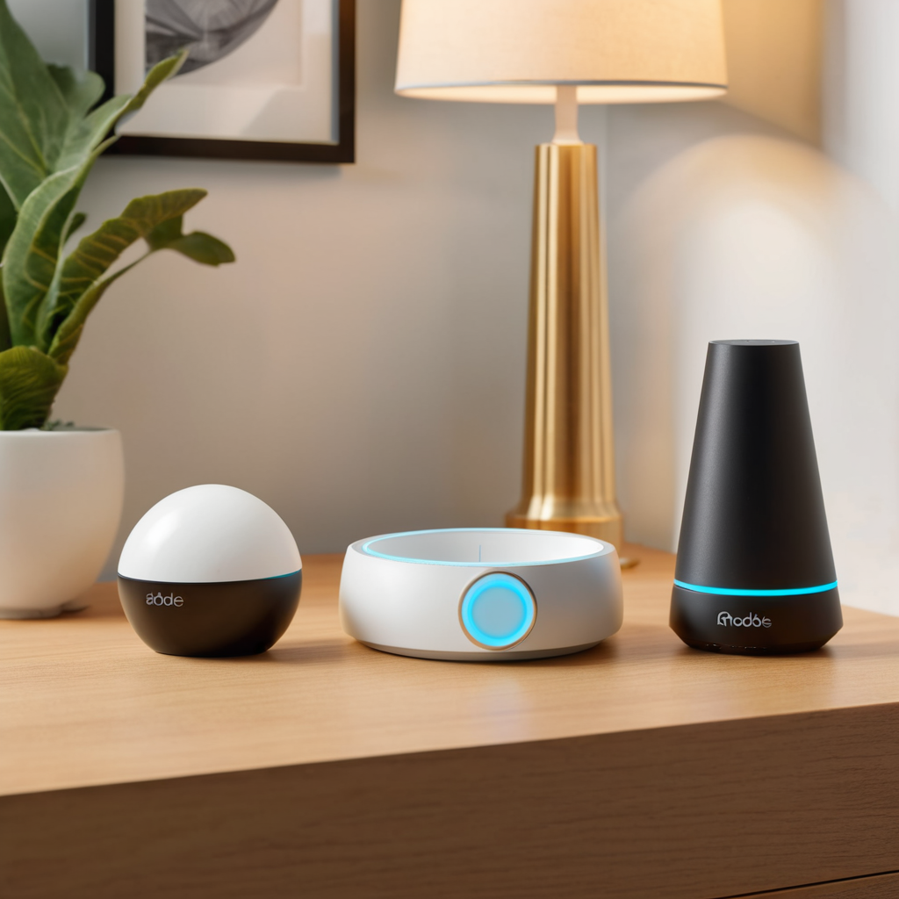
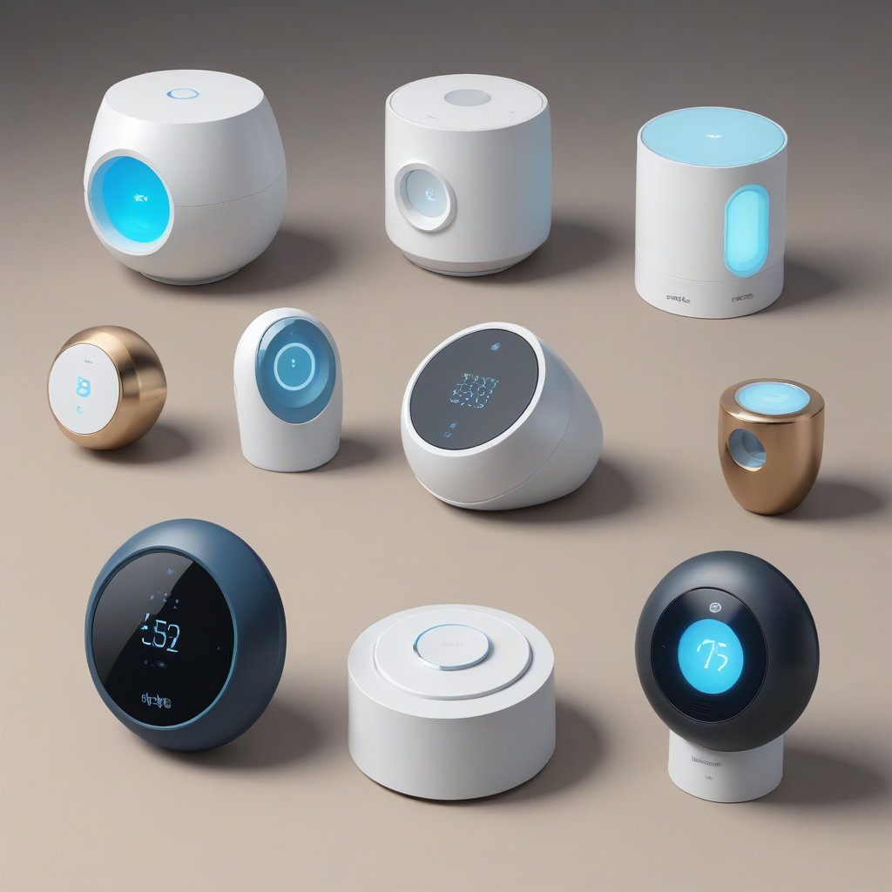
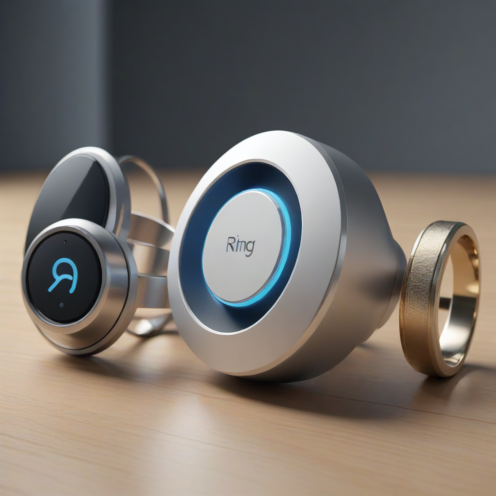

Home safety is no longer just about a loud siren and a blinking red light. In 2026, a robust security system is an interconnected digital shield that protects your physical assets while integrating seamlessly into your daily routine. Whether you are securing a historic home, a modern apartment, or a suburban ranch, the decision to install a DIY alarm system is one of the most impactful choices you can make for your family's well-being. The market has evolved significantly from the hardwired systems of the past, offering wireless flexibility that suits renters and homeowners alike.
When evaluating the Ring vs SimpliSafe vs Abode debate, you are looking at the three major titans of the modern DIY security landscape. Each brand has carved out a specific niche, leveraging distinct strengths to appeal to different types of users. Ring thrives on ecosystem synergy with Amazon, SimpliSafe excels in straightforward security without the bloat, and Abode stands out for its open-architecture smart home capabilities. Understanding the nuances between these platforms is essential for making a long-term investment in your safety.
In this comprehensive 2026 guide, we will break down the hardware, pricing, and smart features of each system. We will move past marketing fluff to provide actionable data on monitoring fees, equipment durability, and customer support. Our goal is to help you identify the best home security system 2026 can offer for your specific budget and lifestyle. Let's dive into the details to ensure your home remains secure and your peace of mind stays intact.
The Contenders: An Overview of the Market Leaders

Before comparing specific features, it is crucial to understand the core philosophy behind each brand. This context helps explain why their hardware and software behave differently. Ring, owned by Amazon, focuses on video-first security. Their ecosystem is designed around the premise that seeing is believing, making their video doorbells and cameras the centerpiece of their offering.
SimpliSafe, on the other hand, maintains its position as the security specialist. While they offer cameras, their primary focus is on intrusion detection. They prioritize the reliability of their cellular backup and the speed of their monitoring centers. For years, they have held a reputation for being the most user-friendly system for those who want security without needing to become IT experts.
Abode positions itself as the smart home bridge. Unlike the others, Abode was built from the ground up to play nicely with third-party devices. If you are looking for Abode smart home integration, this is where they shine. They support a wider range of protocols, making them the preferred choice for tech enthusiasts who want their lights, locks, and thermostat to interact with their alarm system.
- Ring: Best for existing Amazon Alexa users and video-centric security.
- SimpliSafe: Best for pure security reliability and ease of use.
- Abode: Best for smart home automation and open-protocol support.

Hardware Quality and Installation Process
The physical components of your system are the first line of defense. In 2026, battery life and sensor accuracy are paramount. All three systems utilize wireless technology, meaning installation is generally DIY. However, the quality of the base station and the sensors varies.
Base Stations and Connectivity
The base station is the brain of your operation. The Ring Alarm Pro base station includes a built-in Eero Wi-Fi 6 extender. This is a unique selling point that adds value if you are expanding your home network. However, if your internet goes down, the Ring system relies on its cellular backup, which requires a subscription upgrade.
SimpliSafe uses the Base Station 2 or the newer Base Station 3 in 2026. These units are robust and feature built-in cellular backup on all monitoring plans. This redundancy is critical. If your Wi-Fi is cut during a break-in or a power outage, the system stays online. The installation is plug-and-play, taking less than 30 minutes for a standard 5-piece kit.
Abode offers the Abode Iota hub. It is sleek and supports both Z-Wave and Zigbee protocols. This allows you to add third-party sensors that might not work with Ring or SimpliSafe. The installation is similar to the others, but the configuration process offers more granular control for advanced users.
Sensors and Cameras
When looking at a DIY alarm system comparison, the sensors must be reliable. All three offer door/window contacts and motion detectors. SimpliSafe is often praised for the durability of their motion sensors, which feature pet immunity up to 75 pounds. This prevents false alarms triggered by your dog or cat running through the hallway.
Ring offers a wider variety of cameras. The Ring Stick Up Cam and Video Doorbell Pro 2 are industry standards. If you want live video feeds to be the core of your system, Ring provides superior video quality and cloud storage options. However, without a subscription, you lose the ability to save video clips, which is a significant limitation.
Abode offers the Abode Cam and Abode Doorbell. While good, they generally do not match the video compression and field-of-view quality of Ring's dedicated video lineup. Abode's strength lies in their contact sensors, which are often more sensitive and configurable for specific automation triggers.
Smart Home Integration and Ecosystem
In 2026, a security system is only as good as its ability to communicate with other devices. This is where the Abode smart home integration capabilities truly differentiate the market. Abode supports Matter, Z-Wave, and Zigbee out of the box. This means you can control a Philips Hue light strip to turn on when the alarm is armed or use a SmartThings lock to trigger the system.
Ring is closed off. It integrates deeply with Amazon Alexa and Google Assistant, allowing you to arm the system with your voice. However, if you want to use Ring to turn on non-Amazon smart bulbs, you will hit a wall. Their ecosystem is designed to keep you within the Amazon sphere.
SimpliSafe has improved its integration in recent years. It now works with Alexa and Google Home. They also have limited support for other smart home devices, but it is not as seamless as Abode. SimpliSafe is content to focus on security rather than trying to be a full home automation hub.
- Abode: Full support for Matter, Z-Wave, Zigbee, and third-party integration.
- Ring: Excellent Alexa integration, limited third-party device support.
- SimpliSafe: Strong voice assistant support, basic smart home features.
If you are building a highly automated home where lights, locks, and thermostats communicate with your alarm, Abode is the only logical choice. If you simply want to say, "Alexa, arm the house," Ring and SimpliSafe are adequate.
Monitoring Plans and Subscription Costs
This is often the dealbreaker for consumers. Understanding Ring security subscription costs and SimpliSafe monitoring fees is vital for long-term budgeting. While the hardware is a one-time cost, the monitoring fees are recurring. In 2026, inflation has pushed prices up slightly, but the value propositions remain distinct.
Ring Protect Plans
Ring offers three tiers: Protect Basic, Protect Plus, and Protect Pro. The Basic plan starts around $4.99 per month and covers a single camera. It does not include professional monitoring for the alarm system itself. To get police dispatch for your Ring Alarm, you need the Protect Plus plan, which typically costs around $10 per month. This adds cellular backup and unlimited video recording for all cameras at one location.
It is important to note that Ring's entry-level pricing is attractive because the hardware is cheap. However, the ongoing cost to unlock full features can add up. If you have multiple cameras, you might find yourself paying a premium for the Pro plan to manage everything centrally.
SimpliSafe Secure and Monitor
SimpliSafe offers two main monitoring plans: Protect and Secure. Their entry-level Protect plan is around $17.99 per month. This includes 24/7 professional monitoring, cellular backup, and video snapshot capabilities. The Secure plan is approximately $27.99 per month and adds unlimited video uploads and carbon monoxide/sensor coverage.
SimpliSafe has historically been transparent about pricing. They do not require a long-term contract in most cases, allowing you to cancel month-to-month. This flexibility is a major plus for renters. While the monthly fee is higher than Ring's entry point, it includes more security-specific features out of the box.
Abode Secure Plans
Abode's pricing structure is competitive. Their standard monitoring plan sits around $17.99 per month. However, Abode has a unique feature: they offer a free self-monitoring app. You can use the system without paying for professional monitoring if you prefer to handle alerts yourself. This is a significant advantage for those on a tight budget who still want the hardware quality.
Abode also offers a "Lifetime Monitoring" option, which is a high upfront cost that eliminates monthly fees. This is worth calculating if you plan to stay in your home for a decade or more. For most, the monthly fee is reasonable given the advanced automation capabilities included.
Detailed Feature Comparison Table
To visualize the differences clearly, we have compiled a side-by-side comparison of the core offerings available in 2026.
| Feature | Ring Alarm Pro | SimpliSafe Base Station 3 | Abode Iota Hub |
|---|---|---|---|
| Starting Hardware Cost | $149 (Kit) | $249 (Kit) | $229 (Kit) |
| Professional Monitoring | $10/mo (Plus Plan) | $17.99/mo (Protect) | $17.99/mo (Secure) |
| Cellular Backup | Subscription Required | Included with Monitoring | Included with Monitoring |
| Smart Home Protocols | Wi-Fi, Bluetooth | Wi-Fi, Bluetooth | Z-Wave, Zigbee, Matter |
| Video Storage | Cloud (Subscription) | Cloud (Subscription) | Cloud (Subscription) |
| Contract Required | No | No | No |
| Best For | Video & Alexa Users | Reliability & Ease | Smart Automation |
Pros and Cons: An Honest Assessment
Every system has trade-offs. As security experts, we believe in transparency. Here is the breakdown of the advantages and disadvantages for each platform based on real-world performance data.
Ring Pros and Cons
- Pros: Lowest entry price point, excellent video quality, seamless integration with Amazon Smart Home products, large user community for support.
- Cons: Cellular backup requires a higher-tier subscription, proprietary ecosystem limits third-party devices, privacy concerns with video data storage in the cloud.
SimpliSafe Pros and Cons
- Pros: Industry-leading battery life on sensors, no long-term contracts, reliable cellular backup included, excellent customer support reputation.
- Cons: Higher monthly monitoring fees than Ring, cameras are good but not flagship quality, limited smart home automation features.
Abode Pros and Cons
- Pros: Best-in-class smart home integration (Z-Wave/Zigbee), free self-monitoring option available, flexible automation rules, strong privacy controls.
- Cons: Higher hardware cost, fewer video camera options compared to Ring, smaller support network than the larger competitors.
Which System is Best For You?
Choosing the best home security system 2026 depends entirely on your specific situation. We recommend the following scenarios to help you decide.
Choose Ring if: You are a renter looking for a low upfront cost. If you already own an Echo Dot or use Alexa to control your lights, Ring is the most frictionless choice. It is also the best option if your primary concern is video surveillance at the front door and not necessarily a whole-home alarm system.
Choose SimpliSafe if: You want a dedicated security system that "just works." You do not want to tinker with automation rules or worry about Wi-Fi interference. You want the confidence that if the alarm trips, a monitored center is calling the police. This is the safest bet for families with children and pets.
Choose Abode if: You are a tech enthusiast. You want your alarm system to trigger your smart locks, turn on your lights, and adjust your thermostat. You value open standards like Matter and Z-Wave. If you want the flexibility to upgrade sensors from different manufacturers in the future, Abode is the platform for you.
Frequently Asked Questions
Homeowners often have specific concerns regarding installation, costs, and reliability. Below are answers to the most common questions we receive regarding the Ring vs SimpliSafe vs Abode comparison.
Do I need a subscription for the alarm to work?
Technically, no. All three systems will sound a local siren and send you a notification on your phone without a subscription. However, you will not get professional monitoring (police dispatch) or cloud video storage. For true safety, a monitoring subscription is highly recommended to ensure help arrives if you are not home to respond to the alert.
Can I cancel the contract anytime?
Yes. In 2026, all three major brands have moved away from long-term contracts. You can cancel your monthly monitoring service at any time without paying an early termination fee. This flexibility is standard for DIY systems. However, check your hardware purchase terms, as some financing plans may have early payout requirements.
What happens if my Wi-Fi goes down?
This is a critical safety feature. SimpliSafe and Abode include cellular backup on their standard monitoring plans. If the internet cuts out, the system switches to the cellular network to send the alarm signal. Ring requires you to upgrade to a higher tier (Protect Plus or Pro) to unlock cellular backup. Ensure you verify this feature during checkout.
How long do the sensors last on batteries?
Battery life varies by usage and temperature. Generally, door/window sensors last between 3 to 5 years on a single battery. Motion sensors usually require replacement every 12 to 18 months. All three systems will notify you via the app when battery levels get low, giving you ample time to replace them before the system goes offline.
Do these systems work with Google Home?
Yes, all three systems integrate with Google Home and Google Assistant. You can arm and disarm the system using voice commands like "Hey Google, arm the house." Ring integration is slightly deeper for video viewing on Google displays, but all three allow for basic voice control of the security state.
Conclusion and Safety Recommendations
Selecting a home security system is a significant decision that impacts your safety and your wallet. In this Ring vs SimpliSafe vs Abode comparison, we have seen that there is no single "perfect" system. Ring wins on video and price, SimpliSafe wins on reliability and ease, and Abode wins on smart home flexibility.
For the average homeowner, SimpliSafe remains the gold standard for a balance of cost and professional-grade security. It offers the peace of mind that comes with a dedicated monitoring center and robust hardware.
Regardless of which system you choose, remember that technology is only one layer of your safety strategy. We recommend combining your alarm system with strong exterior lighting, locked windows and doors, and community vigilance. If you want to explore more options, check out our guide on the best security systems of 2026 for a broader market view.
Take action today. Secure your perimeter, install your sensors, and test your system regularly. Your home is your sanctuary; protect it with the best tools available. Stay safe, stay informed, and ensure your family is protected against the unexpected.